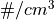

spacepy.pybats.dgcpm¶
The PyBats submodule for handling input and output for the Dynamic Global Core Plasma Model (DGCPM), a plasmasphere module of the SWMF.
Functions
|
Calculate the refill flux of a flux tube of density n, L-shell L, using a refill time constant of tau. |
|
Return saturation density of a flux tube as a function of L-shell in units of . |
Classes
|
Open an L-Slice output file. |
|
Open and handle an MLT Slice output file. |
|
DGCPM's plasma files contain a plethora of values from the model's 2D plane. |
- spacepy.pybats.dgcpm.refill_flux(n, L, tau=1.5, chi='Auto')[source]¶
Calculate the refill flux of a flux tube of density n, L-shell L, using a refill time constant of tau. If kwarg chi is set to ‘Auto’, then zenith angle dependence is calculated using an assumed dipole field. To remove this dependence, set chi to a solar zenith angle in degrees.